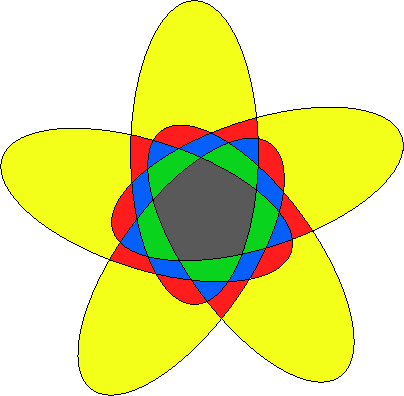
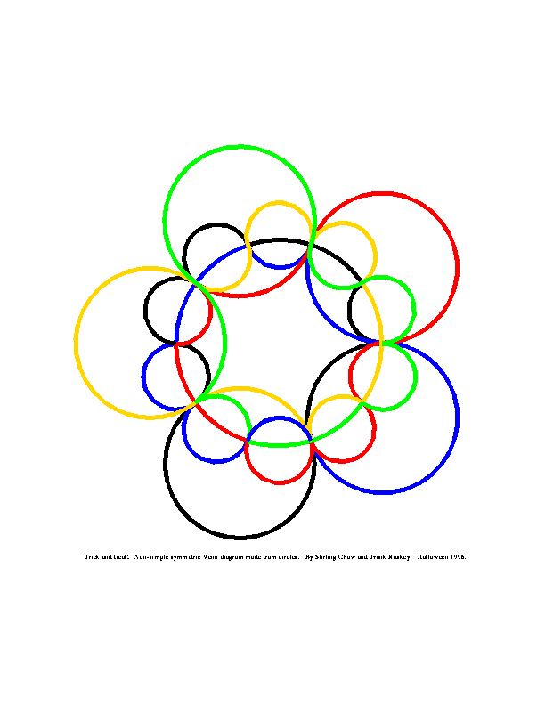
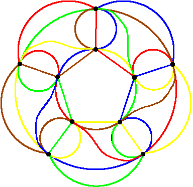
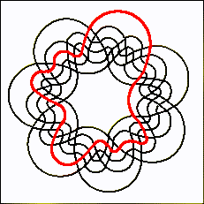

Section 4.2 Symmetric Diagrams for Small \(n\)
On this page we show many examples of symmetric Venn diagrams for specific values of n. For \(n = 2\text{,}\) there is only one Venn diagram and it can be drawn to be polar symmetric. For \(n = 3\text{,}\) there are two symmetric diagrams. The classic three circle diagram is monotone, simple, and has polar symmetry. Diagram #3.1 (shown in Figure 3.7.1) is also a monotone polar symmetric diagram, but it is not simple, nor is it rigid.
Subsection 4.2.1 Symmetric diagrams with \(n = 5\) curves

The simple ellipse diagram shown to the left is from [Gr75] , and has a 5-fold rotational symmetry. It is the only simple symmetric Venn diagram for n=5; in the list below, there are several different renderings of it:
- Rick Mabry observes that the link of five knots formed by weaving the Venn diagram shown above is a Brunnian link --- the removal of any knot causes the link to fall apart. Mabry has created a beautiful rendering of the link made from "ice cream cone curves", see Figure 4.5.1.
- A version created by the author is can be see in Figure 4.5.2; this diagram serves as an illustration of a symmetric Brunnian linkof order 5. (The usual depiction of the Borromean rings (see Section 2.3) is a symmetric Brunnian link of order 3.) This Brunnian link is attributed to C. van de Walle by Stewart [St, pg. 106] .
1
A link is a finite collection of non-intersecting knots (where a knot is a closed, non-self-intersecting curve that is embedded in three dimensions; the trivial knot is a simple loop). A Brunnian link is a link which is non-trivial, yet every proper sub-collection is trivial. A trivial link is one that can be projected to a collection of non-intersecting circles in the plane. - A rendering of the diagram using 5 equilateral triangles is given by Grünbaum in [Gr92b] and redrawn here: Figure 4.5.3.
- Stuart Anderson provided us with the labelled Tutte embedding of the diagram; one curve is highlighted, see Figure 4.5.4.
There are many non-simple symmetric diagrams for \(n=5\text{.}\) The one shown here is a play on the result that Venn diagrams cannot be constructed from "curves that are" circles for \(n > 3\text{;}\) a statement that is no longer true if the three words in quotation marks are removed.

We have done an exhaustive computer search of all symmetric Venn diagrams for \(n=5\) (first reported in the 1997 version of this survey). The number of symmetric Venn diagrams for \(n=5\) is 243, and the table below shows the number possessing particular attributes. It is a often a trivial matter to construct non-simple diagrams from simple ones by "pinching together" simple intersections, but this operation does not produce an essentially different diagram. Thus we are particularly interested in rigid diagrams, of which there are \(12+13+2+4 = 31\text{.}\)
| Polar | Rigid | Monotone | Count |
|---|---|---|---|
| No | No | No | 100 |
| No | No | Yes | 89 |
| No | Yes | No | 12 |
| No | Yes | Yes | 13 |
| Yes | No | No | 5 |
| Yes | No | Yes | 18 |
| Yes | Yes | No | 2 |
| Yes | Yes | Yes | 4 |
For \(n=5\text{,}\) a symmetric minimum Venn diagram must have at least 10 vertices. There are exactly six symmetric rigid 5-Venn diagrams with 10 vertices. One of them is shown below. Three others may be seen in Figure 4.5.5, Figure 4.5.6, and Figure 4.5.7.

The following table shows the number of symmetric diagrams classified according to the number of vertices and rigidity.
| vertices | 10 | 15 | 20 | 25 | 30 |
|---|---|---|---|---|---|
| total | 72 | 111 | 49 | 10 | 1 |
| rigid | 6 | 12 | 12 | 0 | 1 |
Subsection 4.2.2 Symmetric diagrams with \(n = 7\) curves

Referring to the case \(n=7\text{,}\) Grünbaum [Gr75,p.19] wrote: "at present it seems likely that no such diagram exists." However, Grünbaum himself later found examples of such diagrams [Gr92b] and in 1992 additional examples were also discovered by Anthony Edwards and independently by Carla Savage and Peter Winkler. One of Grünbaum’s examples is a remarkable non-monotone simple symmetric Venn diagram (see Figure 4.5.8 and Figure 4.5.9). Below we summarize what is know about symmetric 7-Venn diagrams.
Subsubsection 4.2.2.1 The Grünbaum encoding
The Grünbaum encoding of a simple symmetric Venn diagram consists of four \(n\)-ary strings, call them \(\mathbf{w}\text{,}\) \(\mathbf{x}\text{,}\) \(\mathbf{y}\text{,}\) \(\mathbf{z}\text{,}\) each of length \((2^{n+1}-4)/n\text{.}\) String \(\mathbf{w}\) is obtained by first numbering the curves clockwise as they appear on the outer face, and then following curve \(n\text{,}\) recording its intersections with each of the other curves. The other strings are obtained by going counter-clockwise and/or starting with one of the innermost curves; in each case the curves must be re-numbered first. For the 3 circle diagram \(\mathbf{w}=\mathbf{x}=\mathbf{y}=\mathbf{z} = 1212\text{.}\) For the 5 ellipse diagram at the top of this page, the strings of the Grünbaum encoding are
\begin{align*}
\amp w = z = 142413141324 \text{ and }\\
\amp x = y = 132414241314.
\end{align*}
Of course, we really only need two of the strings, one starting at the inside and one at the outside, since \(\mathbf{w}\) can be inferred from \(\mathbf{x}\text{,}\) and \(\mathbf{y}\) from \(\mathbf{z}\) -- but it’s convenient to have all four, particularly when checking a diagram by hand. How can \(\mathbf{x}\) be obtained from \(\mathbf{w}\) in general? Think of the strings as being indexed \(i = 1,2,\ldots,M\text{.}\) The rule is \(\mathbf{x}[i] = n-\mathbf{w}[M-i+1]\text{.}\)
In fact, only one string is required, since string \(\mathbf{y}\) is a circular rotation of \(\mathbf{x}\text{.}\) The starting position of \(\mathbf{y}\) can be determined as the unique position in \(\mathbf{x}\) where all curves have been encountered an odd number of times (thus implying that we’re on the inside of all curves). In the 5 ellipse example, the starting position of \(\mathbf{y}\) is the rightmost 1 in \(\mathbf{x}\text{.}\) If a single string is chosen to be the representative, then we take the lexicographically least of all four.
This encoding scheme has its parallels in other disciplines: topologists may recognise the Grünbaum encoding as being closely related to the Gauss code of a knot10.
Tao Cao proved in [Ca] that for simple symmetric monotone Venn diagrams, the Grünbaum encoding uniquely identifies the diagram (up to isomorphism of plane graphs).
Subsubsection 4.2.1 Simple Symmetric 7-Venn Diagrams
For \(n=7\text{,}\) all simple monotone symmetric Venn diagrams with polar symmetry are known; there are six of them, and they are listed below. The first five were discovered by Anthony Edwards using a program to generate candidate diagrams and manual checking to eliminate those candidates that were not Venn diagrams [Ed96] ; however one, Hamilton, was first found constructed by hand by Edwards. He named them after the cities in which they were discovered and we follow his naming convention (but also number them P1-P6). Grünbaum [Gr92b] also discovered "Adelaide". An exhaustive computer search by Frank Ruskey uncovered another, "Victoria", that had been overlooked in Edwards’ manual checking.
- Adelaide (P1):
- Black-and-white Adelaide, Figure 4.5.10.
- One curve coloured green, Figure 4.5.11.
- One curve coloured green, Figure 4.5.12.